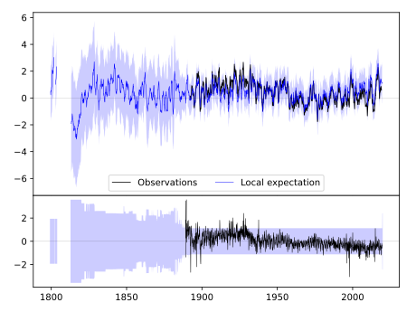
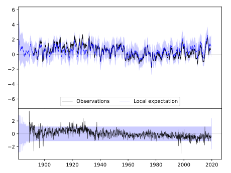
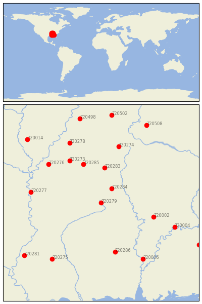

LOUISVILLE [USA]


| Neighbour | Name | Country | Distance | Lon/Lat | Years |
|---|
| 720279 | LOUISVILLE | USA | 0 | -89.1, 33.1 | 1888-2019 |
| 720284 | STATE UNIV | USA | 52 | -88.8, 33.5 | 1886-2019 |
| 720283 | PONTOTOC EXP STN | USA | 111 | -89.0, 34.1 | 1889-2019 |
| 720285 | WATER VALLEY | USA | 130 | -89.6, 34.2 | 1889-2019 |
| 720002 | GREENSBORO | USA | 146 | -87.6, 32.7 | 1856-2019 |
| 720273 | BATESVILLE 2 SW | USA | 157 | -90.0, 34.3 | 1882-2019 |
| 720286 | WAYNESBORO 2 W | USA | 160 | -88.7, 31.7 | 1882-2019 |
| 720274 | BOONEVILLE | USA | 183 | -88.6, 34.7 | 1889-2019 |
| 720276 | CLARKSDALE | USA | 185 | -90.6, 34.2 | 1885-2019 |
| 720277 | GREENVILLE | USA | 188 | -91.1, 33.4 | 1884-2019 |
| 720278 | HERNANDO | USA | 206 | -90.0, 34.8 | 1882-2019 |
| 720006 | THOMASVILLE | USA | 210 | -87.9, 31.5 | 1891-2019 |
| 720004 | SELMA | USA | 211 | -87.0, 32.4 | 1858-2019 |
| 720275 | BROOKHAVEN CITY | USA | 221 | -90.5, 31.5 | 1892-2019 |
| 720281 | NATCHEZ | USA | 265 | -91.3, 31.6 | 1799-2019 |
| 720508 | WAYNESBORO | USA | 272 | -87.8, 35.3 | 1884-2019 |
| 720498 | COVINGTON 3 SW | USA | 272 | -89.7, 35.5 | 1883-2019 |
| 720014 | BRINKLEY | USA | 278 | -91.2, 34.9 | 1883-2019 |
| 720502 | JACKSON EXP STN | USA | 279 | -88.8, 35.6 | 1891-2019 |
| 720003 | HIGHLAND HOME | USA | 294 | -86.3, 31.9 | 1891-2019 |